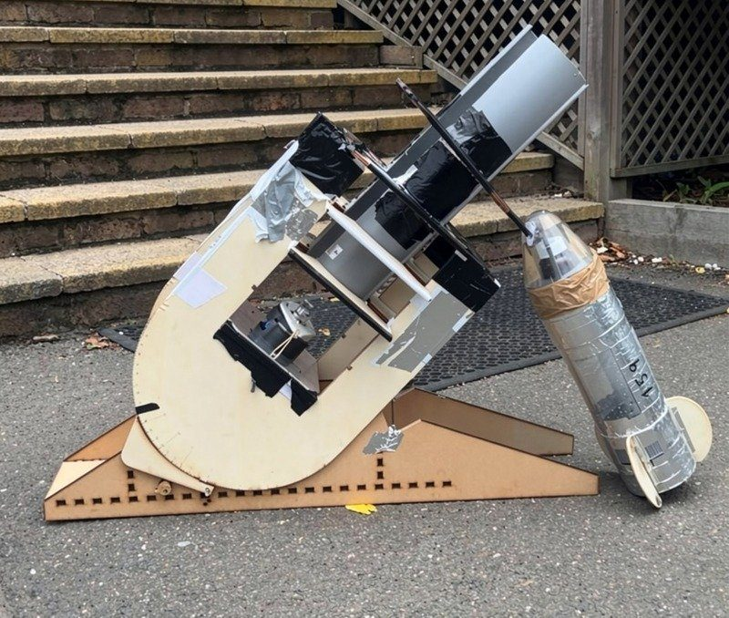
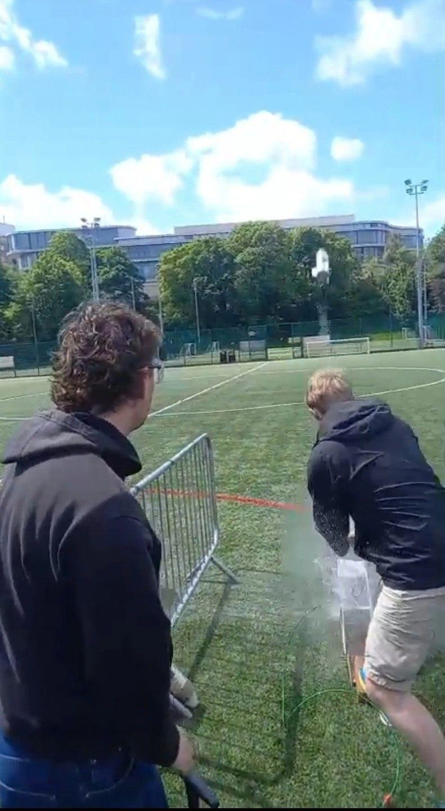
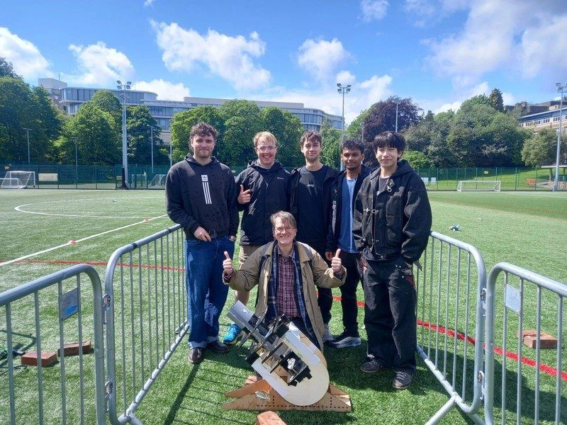
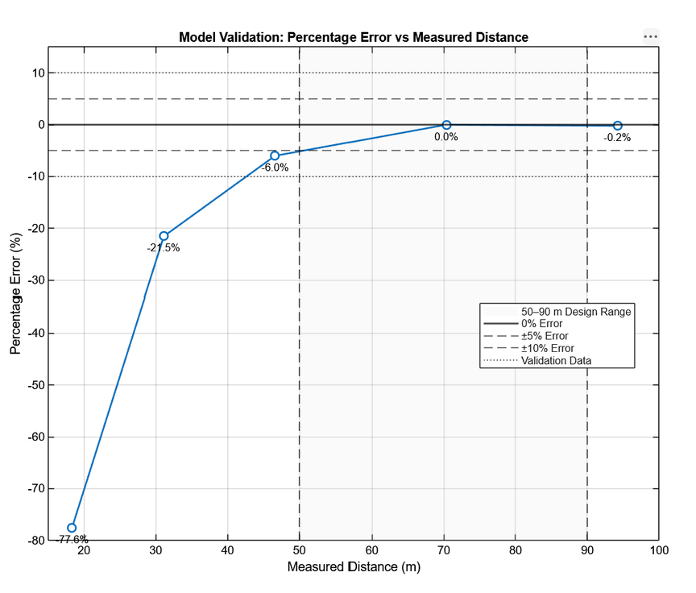
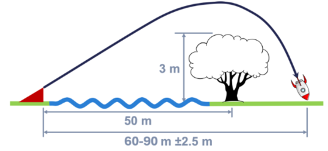

University project · Year 1
Water Bottle Rocket
- Role
- Team lead
- When
- Feb – Jun 2026
- Team
- Tutor group
- Tools
- MATLAB, CNC router
Design, build and launch three rockets that deliver medicine-bottle payloads to a target, from an adjustable-angle launcher.
- 1stof 61 groups for accuracy
- <6%model error against 5 test launches
- 3/3rockets in the 65–70 m target zone
What I did
- Led the team: managed tasks, timelines and stakeholders, ran our meetings and wrote the launch-day risk assessment.
- Built a MATLAB model of bottle pressure, thrust, velocity and flight trajectory.
- Validated the model against thrust-rig data and 5 test launches, varying rocket mass and pressure.
- Prototyped the adjustable-angle launcher, and created the CAM toolpaths to cut the foamboard body panels on a CNC router.
Result
1st out of 61 groups for accuracy. All three rockets landed in the 65–70 m target zone: a 100% success rate against the design criteria.





Thrust test rig
CNC router cutting the foamboard panels
MATLAB trajectory plot